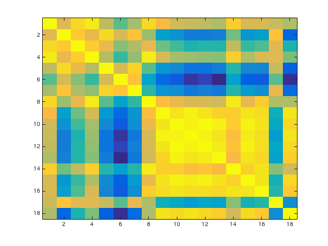

RSA Tutorial
Compare DSMs
- For CoSMoMVPA's copyright information and license terms, #
- see the COPYING file distributed with CoSMoMVPA. #
subjects = {'s01','s02','s03','s04','s05','s06','s07','s08'};
masks = {'ev_mask.nii','vt_mask.nii'};
config=cosmo_config();
study_path=fullfile(config.tutorial_data_path,'ak6');
In a nested loop over masks then subjects: load each dataset demean it, get DSM, save it in dsms
n_subjects=numel(subjects); n_masks=numel(masks); counter=0; for m = 1:n_masks msk = masks{m}; for s = 1:length(subjects) sub = subjects{s}; sub_path=fullfile(study_path,sub); % load dataset ds_fn=fullfile(sub_path,'glm_T_stats_perrun.nii'); mask_fn=fullfile(sub_path,msk); ds_full = cosmo_fmri_dataset(ds_fn,... 'mask',mask_fn,... 'targets',repmat(1:6,1,10)'); % compute average for each unique target ds=cosmo_fx(ds_full, @(x)mean(x,1), 'targets', 1); % remove constant features ds=cosmo_remove_useless_data(ds); % demean % Comment this out to see the effects of demeaning vs. not ds.samples = bsxfun(@minus, ds.samples, mean(ds.samples, 1)); % compute the one-minus-correlation value for each pair of % targets. % (Hint: use cosmo_pdist with the 'correlation' argument) % >@@> dsm=cosmo_pdist(ds.samples, 'correlation'); % <@@< if counter==0 % first dsm, allocate space n_pairs=numel(dsm); neural_dsms=zeros(n_subjects*n_masks,n_pairs); end % increase counter and store the dsm as the counter-th row in % 'neural_dsms' % >@@> counter=counter+1; neural_dsms(counter,:)=dsm; % <@@< end end
Then add the v1 model and behavioral DSMs
models_path=fullfile(study_path,'models'); load(fullfile(models_path,'v1_model.mat')); load(fullfile(models_path,'behav_sim.mat')); % add to dsms (hint: use comso_squareform) % >@@> v1_model_sf=cosmo_squareform(v1_model); behav_model_sf=cosmo_squareform(behav); % ensure row vector because Matlab and Octave return % row and column vectors, respectively dsms = [neural_dsms; v1_model_sf(:)'; behav_model_sf(:)']; % <@@<
Now visualize the cross-correlation matrix. Remember that 'cosmo_corr' (or the builtin 'corr') calculates correlation coefficients between columns and we want between rows, so the data has to be transposed.
% >@@> cc = cosmo_corr(dsms'); figure(); imagesc(cc); % <@@<
Now use the values in the last two rows of the cross correlation matrix to visualize the distributions in correlations between the neural similarities and the v1 model/behavioral ratings. Store the result in a matrix 'cc_models', which should have 8 rows (corresponding to the participants) and 4 columns (corresponding to EV and VT correlated with both models)
Rows 1 to 8: EV neural similarities Rows 9 to 16: VT neural similarities Row 17: EV model Row 18: behavioural similarities
% >@@> cc_models = [cc(1:8,17) cc(9:16,17) cc(1:8,18) cc(9:16,18)]; % <@@< labels = {'v1 model~EV','v1 model~VT','behav~EV','behav~VT'}; figure(); boxplot(cc_models); set(gca,'XTick',[1:4],'XTickLabel',labels);